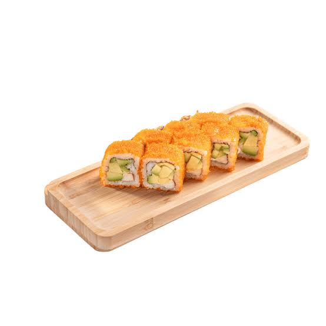
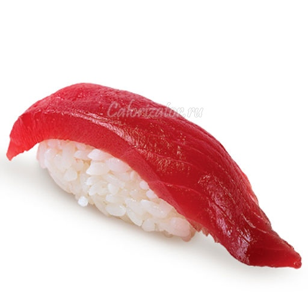
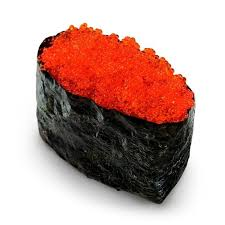

Суши
 |
ЧуккаСалат из морских водорослей, заправленный кунжутным маслом. Идеально подходит в качестве гарнира или легкой закуски. |
 |
МагуроФиле тунца, нарезанное тонкими ломтиками. Подается с соевым соусом и васаби. |
 |
ТобикоИкра летучей рыбы, придающая блюдам особый вкус. |